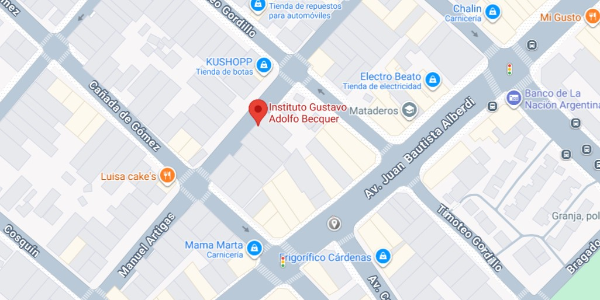

institución educativa privada dedicada a la enseñanza en los niveles Inicial y Primario. Se caracteriza por ofrecer una formación laica, enfocada en la actividad física, el aprendizaje a través del movimiento y el desarrollo de valores como el trabajo en equipo y la perseverancia.
Mayo 2016
Diciembre 2017
